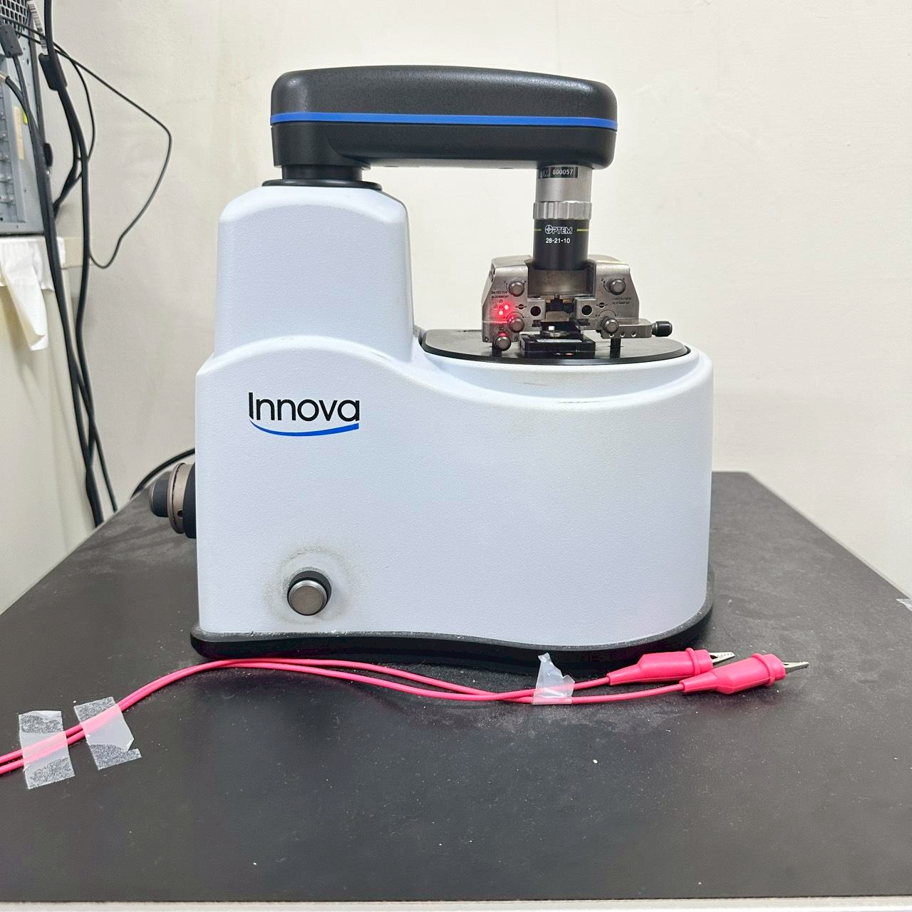

01
Atomic Force Microscope
Surface topography and conductive AFM
High-resolution imaging of surface morphology, lateral force mapping, and conductive-AFM measurements for electrically-driven domain manipulation in 2D magnetic materials.
Capabilities: Tapping / Contact / Conductive modes
Applications: bubble domain creation, PL patterning in 2D heterostructures
Details →
Applications: bubble domain creation, PL patterning in 2D heterostructures